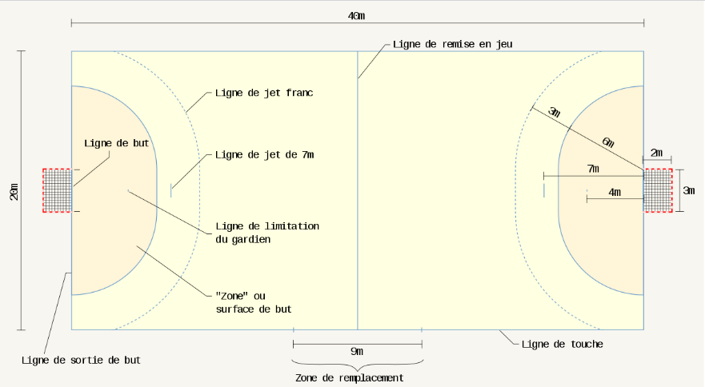

Naissance du handball en 1898 au Danemark avec l’apparition du « Haandbold ». Le handball est un sport collectif où deux équipes de 7 joueurs s'affrontent avec un ballon sur un terrain rectangulaire de dimensions 40 m par 20 m. En Handball, l’objectif de l’arbitre/juge est d’être juste et permettre le déroulement de la rencontre dans le respect de l’équité sportive.
Les lignes du terrain de hand-ball dans la plupart des gymnases sont de couleur jaune.
Il faut au moins deux ballons pour chaque match.
Seul le gardien de but a le droit de pénétrer la surface de but et le ballon appartient au gardien sur la surface de but. Le gardien de but peut devenir le 7ème joueur de champ ou être remplacé par un joueur de champ portant une chasuble. Si pénétration d’un joueur dans la zone, il y a une sanction progressive adaptée et si la pénétration met en échec une occasion manifeste de but on fait un jet de 7 mètres.
Un but est marqué lorsque le ballon tout entier franchit toute la largeur de la ligne de but. Un but accordé ne peut plus être annulé une fois que l’arbitre a sifflé l’engagement par deux coups de sifflet. Un but peut être marqué directement sur : Remise en jeu, Jet franc, 7 mètres, Engagement, Renvoi.
Au début du match, l’équipe qui gagne le tirage au sort choisit d’engager ou choisit son terrain. Après chaque but, le match reprend avec un engagement exécuté par l’équipe qui a encaissé le but, dans les trois secondes qui suivent le coup de sifflet d’engagement depuis le centre de l’aire de jeu. Attention :
La fin du match est sifflée par trois coups de sifflet.
Une remise en jeu est accordée lorsque le ballon tout entier a franchi la ligne de touche ou lorsqu’un joueur de champ de l’équipe qui défend a touché le ballon en dernier lieu avant que ce dernier ne quitte l’aire de jeu en franchissant la ligne de sortie de but de son équipe. Elle est exécutée sans coup de sifflet des arbitres, depuis l’endroit où le ballon est sorti. Le porteur du ballon doit garder au moins un pied sur la ligne de touche jusqu’à ce que le ballon ait quitté sa main et peut directement marquer le but. Lors de l’exécution d’une remise en jeu, les joueurs adverses doivent se tenir à 3 mètres au moins du lanceur.
Après une faute sifflée, le ballon est remis en jeu à l'endroit de la faute.
Un renvoi est accordé quand le gardien a contrôlé le ballon sur la surface de but ou quand le ballon franchit la ligne de sortie de but après avoir été touché en dernier lieu par le gardien de but ou un joueur de l’équipe adverse. Il est à exécuter par le GB, sans coup de sifflet de l’arbitre, depuis la surface de but au-delà de la ligne de surface de but.
Le jet franc est accordé dès qu’une irrégularité est commise par une équipe. Il est généralement exécuté sans coup de sifflet de l’arbitre, en principe, de l’endroit où l’irrégularité est intervenue. Les attaquants ne doivent pas se trouver entre les lignes de surface de but et de jet franc au moment de l’exécution d’un jet franc. Lors de l’exécution d’un jet franc, les joueurs adverses doivent se tenir à une distance minimale de 3 mètres du lanceur. Un jet de 7 mètres est ordonné quand :
Lorsqu’une faute est commise par la défense, entre la ligne des 9m et la zone du gardien, le ballon est rendu à l’attaque, le jet franc s'effectue donc à 9m.
L’Équipe :
Les changements :
Toute irrégularité, prioritairement ou exclusivement dirigée vers le joueur adverse et non vers le ballon, doit être sanctionnée progressivement. Chaque irrégularité relevant de la sanction progressive requiert une sanction personnelle, en commençant par un avertissement, et se poursuivant par une série de sanctions de plus en plus sévères. Les avertissements et les exclusions provenant d’autres irrégularités doivent également être pris en ligne de compte dans la progressivité. Un joueur qui attaque le joueur adverse d’une manière présentant un risque pour l’intégrité physique de ce dernier doit être disqualifié. Tout comportement antisportif grossier par un joueur ou un officiel de l’équipe sur l’aire de jeu ou en dehors de celle-ci, doit être sanctionné par une disqualification.